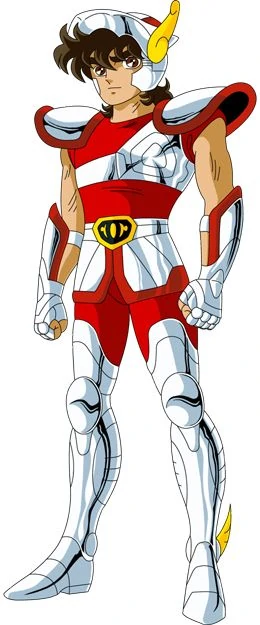
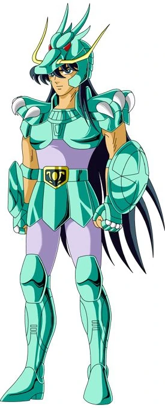
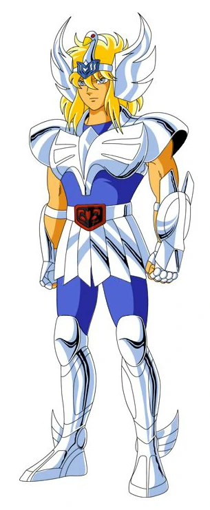
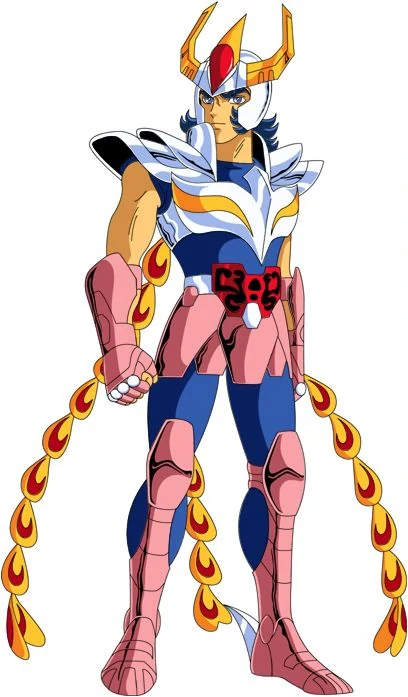

Pegasus Seiya is one of the eighty-eight mythical warriors known as Saints who have served the Goddess Athena throughout the ages, protecting justice and peace on Earth. As a Saint, Seiya dons a powerful armor of divine origins known as a Cloth, the one which represents the constellation of Pegasus. Seiya also possesses superhuman strength and speed, two of the many extraordinary abilities the Saints draw from their guardian constellations and an inner essence called Cosmo.

Dragon Shiryu is considered the most mature and wisest of the five heroes, Shiryū is the Bronze Saint of the Dragon constellation, whose Cloth possesses legendary defensive and offensive properties. Shiryū is one of the ten surviving orphans trained to become Athena's Saints by Mitsumasa Kido. With Kido dead, Shiryū and his allies become the protectors of his adopted granddaughter, Saori, Athena's reincarnation.

Cygnus Hyoga is one of the main characters in the series, Hyoga appears calm, collected, and unemotional. Beneath the surface, however, he is passionate and devoted to his ideals. As a Saint born under the Cygnus constellation, Hyoga is able to control and manipulate ice and snow as he pleases, as he mastered the basis of the technique of the Saints of ice, stop the atoms of matter by the power of their Cosmo.

Andromeda Shun is the Bronze Saint of the Andromeda constellation. He is a merciful and gentle soul by nature and a firm believer in solving problems without bloodshed. This attitude separates him from the rest of the Saints: whereas they will not hesitate to battle when the situation demands it, Shun only allows himself to fight if it is an absolute necessity or if his almost endless patience wears out. In such cases, Shun can become an extremely skilled and deadly fighter.

Phoenix Ikki is almost the opposite of his younger brother, Shun, and his fellow Saints. Ikki is a loner, cold and harsh. However, underneath his rough exterior lies a compassionate and kind soul. Ikki is guided by his deep love and loyalty for his younger brother, for his friends and for Athena. Although he dislikes teamwork, he comes to battle whenever Athena's Saints need his help and often arrives at critical moments to save his younger brother and friends from certain death. He has a noble, complex and mature character, who never hesitates to sacrifice himself for his friends.